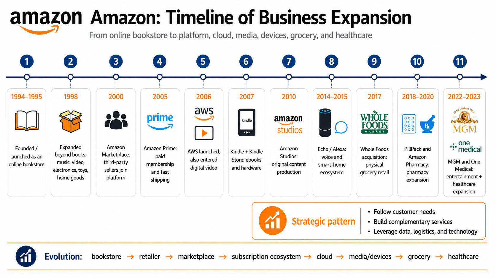
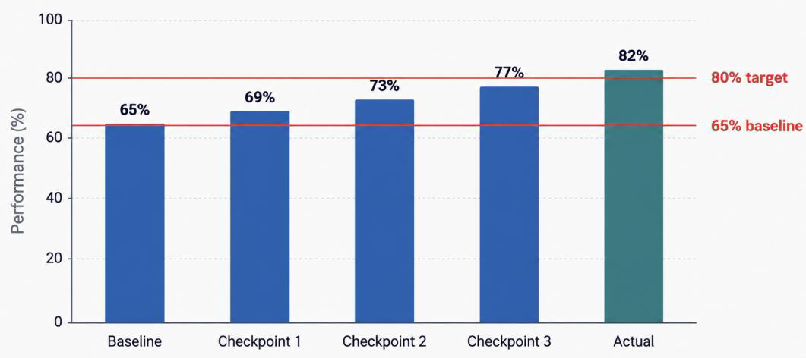

Chủ đề 2: Thúc đẩy triển khai vận hành
Topic 2: Driving Operational Execution — bản đối chiếu Anh – Việt
TS. Phương (Emmy) Hoàng · 35 slide
Quy ước của bản dịch. Mỗi slide là một khối: cột bên trái là nguyên văn tiếng Anh (màu xám), cột bên phải là bản tiếng Việt (màu đen). Nội dung được dịch sát theo từng slide, không lược bỏ.
Thuật ngữ chuyên môn được dịch sang tiếng Việt kèm nguyên bản tiếng Anh trong ngoặc ở lần xuất hiện đầu tiên. Tên sản phẩm và tên bộ phận (Zalo, Zing MP3, Adtima, Báo Mới, Zalo AI, Product, Technology, Marketing, People, Operations) giữ nguyên.
Topic 2: Driving Operational Execution
Chủ đề 2: Thúc đẩy triển khai vận hành
Learning Outcomes
Kết quả học tập
- Formulate clear outcomes, KPIs and measurement criteria for assigned team work.
- Design a progress-monitoring and quality-assurance rhythm appropriate to their team's delivery context.
- Diagnose execution bottlenecks and prioritise resolution actions based on impact.
- Adjust execution plans in response to performance data and feedback.
- Xây dựng kết quả kỳ vọng (outcome), KPI và tiêu chí đo lường rõ ràng cho phần việc được giao cho nhóm.
- Thiết kế nhịp theo dõi tiến độ và bảo đảm chất lượng phù hợp với bối cảnh triển khai của nhóm.
- Chẩn đoán điểm nghẽn (bottleneck) trong triển khai và ưu tiên các hành động xử lý dựa trên mức tác động.
- Điều chỉnh kế hoạch triển khai dựa trên dữ liệu hiệu quả và phản hồi.
Today's learning path
Lộ trình học hôm nay
| 1 | Setting the Context | Đặt bối cảnh |
| 2 | From Strategy to Managerial Execution | Từ chiến lược đến triển khai của quản lý |
| 3 | From Direction to Measurable Results | Từ định hướng đến kết quả đo lường được |
| 4 | From Measures to Management Signals | Từ thước đo đến tín hiệu quản trị |
| 5 | Build and Run the Execution System | Xây dựng và vận hành hệ thống triển khai |
Slide 05, 12, 20 và 28 lặp lại chính sơ đồ lộ trình này, mỗi lần đánh dấu chặng kế tiếp (“Next”).
Amazon's journey: From One Business to an Ecosystem
Hành trình của Amazon: Từ một mảng kinh doanh đến một hệ sinh thái

From Insight to Impact: The Strategic Management Cycle
Từ hiểu biết đến tác động: Vòng quản trị chiến lược
| Stage | Question | Focus |
|---|---|---|
| Research & Analysis Nghiên cứu & phân tích | Where are we now? Hiện tại đang ở đâu? | — |
| Strategy Formulation Hoạch định chiến lược | Where will we go? Sẽ đi đến đâu? | Objectives • options • priorities • trade-offs Mục tiêu • phương án • ưu tiên • đánh đổi |
| Translation & Planning Chuyển hoá & lập kế hoạch | How will it become action? Làm sao để thành hành động? | Initiatives • KPIs • owners • milestones Sáng kiến • KPI • người chủ trì • mốc tiến độ |
| Execution Triển khai | How will we deliver? Sẽ thực hiện thế nào? | Coordination • blockers • quality • accountability Phối hợp • vướng mắc • chất lượng • trách nhiệm giải trình |
| Evaluation & Adaptation Đánh giá & điều chỉnh | Are outcomes achieved? Kết quả có đạt được? | Results • gaps • learning • adjustment Kết quả • khoảng trống • bài học • điều chỉnh |
From Organisational Direction to Team Delivery
Từ định hướng của tổ chức đến kết quả của nhóm
| Level | Question | Content |
|---|---|---|
| 1. Corporate Strategy Chiến lược tập đoàn | Where will the organisation compete? Tổ chức sẽ cạnh tranh ở đâu? | Portfolio • markets • ecosystems • resource allocation Danh mục • thị trường • hệ sinh thái • phân bổ nguồn lực |
| 2. Business Strategy Chiến lược đơn vị kinh doanh | How will the business compete and succeed? Đơn vị sẽ cạnh tranh và thắng bằng cách nào? | Target customers • value proposition • positioning • growth Khách hàng mục tiêu • giá trị đề xuất • định vị • tăng trưởng |
| 3. Functional Strategy Chiến lược chức năng | How will each function support the business strategy? Mỗi bộ phận hỗ trợ chiến lược kinh doanh thế nào? | Product • tech • marketing • people • operations Product • tech • marketing • people • operations |
| 4. Operational Execution Triển khai vận hành | What must teams deliver, by when and how? Các nhóm phải tạo ra kết quả gì, khi nào và bằng cách nào? | OKRs • KPIs • owners • milestones • risk controls OKR • KPI • người chủ trì • mốc tiến độ • kiểm soát rủi ro |
Manager translation lens
Translate priorities into: team outcomes · success measures · resource choices · adaptive execution. This is the bridge between Think Strategically and Drive Impact.
Góc nhìn chuyển hoá của quản lý
Chuyển các ưu tiên thành: kết quả kỳ vọng của nhóm · thước đo thành công · lựa chọn nguồn lực · triển khai linh hoạt. Đây là cây cầu giữa Think Strategically và Drive Impact.
From Zalo Direction to Team Execution
Từ định hướng của Zalo đến triển khai của nhóm
| Level | Illustrative Zalo question | Câu hỏi minh hoạ |
|---|---|---|
| Corporate Tập đoàn | Which businesses and platforms should form the Zalo ecosystem, and how should resources be allocated across messaging, media, advertising, life utilities and AI? | Những mảng kinh doanh và nền tảng nào nên hợp thành hệ sinh thái Zalo, và nguồn lực nên được phân bổ ra sao giữa nhắn tin, truyền thông, quảng cáo, tiện ích đời sống và AI? |
| Business Đơn vị kinh doanh | How should Zalo Messaging, Zing MP3, Adtima, Báo Mới or Zalo AI create distinctive value and succeed in their respective markets? | Zalo Messaging, Zing MP3, Adtima, Báo Mới hay Zalo AI nên tạo ra giá trị khác biệt và thành công trong thị trường của mình bằng cách nào? |
| Functional Chức năng | What must Product, Technology, Marketing, People and Operations contribute to support each platform's strategy? | Product, Technology, Marketing, People và Operations phải đóng góp gì để hỗ trợ chiến lược của từng nền tảng? |
| Operational Vận hành | What outcomes, OKRs, releases, projects, responsibilities, timelines and KPIs must each team deliver this quarter? | Mỗi nhóm phải tạo ra những kết quả, OKR, bản phát hành, dự án, phần trách nhiệm, tiến độ và KPI nào trong quý này? |
Operational Execution Turns Direction into Results
Triển khai vận hành biến định hướng thành kết quả
Definition
Operational execution is the process of translating goals into coordinated actions, monitoring whether actions create intended results, and correcting the plan when evidence shows delivery is moving off track.
Định nghĩa
Triển khai vận hành là quá trình chuyển mục tiêu thành các hành động được phối hợp, theo dõi xem hành động có tạo ra kết quả mong muốn hay không, và hiệu chỉnh kế hoạch khi bằng chứng cho thấy việc thực hiện đang lệch hướng.
Execution Fails When Activity Replaces Results
Triển khai thất bại khi hoạt động thay thế cho kết quả
| Individual contributor · Nhân sự chuyên môn | Manager · Quản lý |
|---|---|
| Delivers own work Tự tạo ra kết quả công việc của mình | Creates the team delivery system Tạo ra hệ thống triển khai của nhóm |
| Solves assigned problems Giải quyết các vấn đề được giao | Clarifies outcomes and priorities Làm rõ kết quả kỳ vọng và ưu tiên |
| Reports progress Báo cáo tiến độ | Creates visibility and decision rhythm Tạo ra sự minh bạch và nhịp ra quyết định |
| Escalates blockers Báo lên các vướng mắc | Removes constraints and adjusts execution Loại bỏ các ràng buộc và điều chỉnh việc triển khai |
Take a 15-Minute Break
Nghỉ 15 phút
Three Manager Moves That Drive Execution
Ba nước đi của quản lý giúp thúc đẩy triển khai
2 Coordinate — align people, work and resources
3 Adjust — use evidence to correct and improve execution
2 Phối hợp — sắp xếp con người, công việc và nguồn lực
3 Điều chỉnh — dùng bằng chứng để hiệu chỉnh và cải thiện việc triển khai
Six term families used in operational execution · Sáu nhóm thuật ngữ dùng trong triển khai vận hành
| Direction Định hướng | Goal • objective • outcome • impact | Mục tiêu chung • mục tiêu cụ thể • kết quả kỳ vọng • tác động |
| Measurement Đo lường | Metric • KPI • target • baseline | Thước đo • KPI • mức mục tiêu • mức nền |
| Planning Lập kế hoạch | OKR • initiative • milestone • dependency | OKR • sáng kiến • mốc tiến độ • quan hệ phụ thuộc |
| Ownership Trách nhiệm | Owner • RACI • resources • capacity | Người chủ trì • RACI • nguồn lực • năng lực đáp ứng |
| Coordination Phối hợp | Cadence • status • blocker • escalation | Nhịp rà soát • trạng thái • vướng mắc • báo lên |
| Adaptation Thích ứng | Risk • issue • mitigation • learning | Rủi ro • sự cố • giảm thiểu • bài học |
Direction: What result are we trying to create?
Định hướng: Chúng ta đang cố tạo ra kết quả gì?
| From broad direction to value | EN | VI |
|---|---|---|
| Goal: broad destination Mục tiêu chung: đích đến rộng | What are we trying to achieve? | Chúng ta muốn đạt được điều gì? |
| Objective: specific result Mục tiêu cụ thể: kết quả xác định | What specifically must be achieved? | Cụ thể phải đạt được điều gì? |
| Output: thing produced Đầu ra: thứ được tạo ra | What will we produce? | Chúng ta sẽ tạo ra cái gì? |
| Outcome: change created Kết quả kỳ vọng: thay đổi được tạo ra | What change or value should result? | Thay đổi hay giá trị nào sẽ xuất hiện? |
| Impact: broader value Tác động: giá trị rộng hơn | Why does this result matter? | Vì sao kết quả này quan trọng? |
Three terms learners often confuse
Output — Launch a new onboarding feature → Outcome — New users complete onboarding faster → Impact — Higher activation and retention
Ba thuật ngữ thường bị lẫn
Đầu ra — Ra mắt một tính năng onboarding mới → Kết quả kỳ vọng — Người dùng mới hoàn tất onboarding nhanh hơn → Tác động — Tỷ lệ kích hoạt và giữ chân cao hơn
Execution boundaries
- Success criteria — What does “done well” look like?
- Scope — What is included and excluded?
- Requirement — What must the solution provide?
- Constraint — What limits our options?
- Assumption — What are we taking for granted?
Ranh giới triển khai
- Tiêu chí thành công — Thế nào là “làm tốt”?
- Phạm vi — Cái gì được tính vào và cái gì bị loại ra?
- Yêu cầu — Giải pháp bắt buộc phải có gì?
- Ràng buộc — Điều gì giới hạn các phương án?
- Giả định — Chúng ta đang mặc định điều gì?
From goal to execution-ready objective
Từ mục tiêu chung đến mục tiêu sẵn sàng triển khai
| Concept | Meaning | Example |
|---|---|---|
| Goal Mục tiêu chung | Broad direction Định hướng rộng | Improve onboarding Cải thiện onboarding |
| Objective Mục tiêu cụ thể | Specific result Kết quả xác định | Reduce onboarding completion time by 20% by Q4 Giảm 20% thời gian hoàn tất onboarding trước Q4 |
| Task Nhiệm vụ | Work to be done Công việc cần làm | Redesign tutorial screens Thiết kế lại các màn hình hướng dẫn |
SMART Creates Minimum Execution Clarity
SMART tạo ra mức rõ ràng tối thiểu để triển khai
- S · Specific — Who, what and how are clear
- M · Measurable — Progress or success can be assessed
- A · Achievable — Realistic with available resources
- R · Relevant — Connected to business or team goals
- T · Time-bound — Has a defined timeframe
- S · Cụ thể — Rõ ai, việc gì, làm thế nào
- M · Đo lường được — Tiến độ hoặc thành công có thể đánh giá được
- A · Khả thi — Thực tế với nguồn lực hiện có
- R · Liên quan — Gắn với mục tiêu kinh doanh hoặc mục tiêu nhóm
- T · Có thời hạn — Có khung thời gian xác định
Turning a vague goal into a SMART objective
Biến một mục tiêu mơ hồ thành mục tiêu SMART
Weak — Improve team responsiveness.
SMART — Reduce average internal response time for priority support requests from 24 hours to 12 hours by 30 September.
What changed? The objective now has a defined measure, baseline, target and timeframe.
Yếu — Cải thiện độ phản hồi của nhóm.
SMART — Giảm thời gian phản hồi nội bộ trung bình cho các yêu cầu hỗ trợ ưu tiên từ 24 giờ xuống 12 giờ trước ngày 30 tháng 9.
Điều gì đã thay đổi? Mục tiêu giờ đã có thước đo, mức nền, mức mục tiêu và khung thời gian xác định.
SMART can still measure the wrong result
SMART vẫn có thể đo sai kết quả
Example objective — Launch Smart Assist by Friday. This is specific, measurable and time-bound.
- What user outcome should improve?
- What quality boundary matters?
- What risk should be protected?
- What adoption signal matters?
- What threshold triggers a change?
SMART helps with clarity. It does not guarantee the team is measuring the right result.
Ví dụ mục tiêu — Ra mắt Smart Assist trước thứ Sáu. Mục tiêu này cụ thể, đo lường được và có thời hạn.
- Kết quả nào của người dùng cần được cải thiện?
- Ranh giới chất lượng nào là quan trọng?
- Rủi ro nào cần được phòng ngừa?
- Tín hiệu sử dụng nào là quan trọng?
- Ngưỡng nào kích hoạt việc thay đổi?
SMART giúp làm rõ, nhưng không bảo đảm nhóm đang đo đúng kết quả.
Add the outcome, evidence and guardrails
Bổ sung kết quả kỳ vọng, bằng chứng và lằn ranh bảo vệ
When the path is substantially known
By [date], [beneficiary] will experience [observable change] from [baseline] to [target], while [quality/risk boundary] remains protected.
When the work is uncertain
By [date], we will test [critical assumption] using [specified evidence], enabling a decision about [next action].
Known path → performance objective. Uncertain path → learning or validation objective.
Khi con đường đã tương đối rõ
Trước [ngày], [đối tượng hưởng lợi] sẽ có [thay đổi quan sát được] từ [mức nền] lên [mức mục tiêu], trong khi [ranh giới chất lượng/rủi ro] vẫn được giữ.
Khi công việc còn nhiều bất định
Trước [ngày], chúng ta sẽ kiểm chứng [giả định then chốt] bằng [bằng chứng xác định], để có thể ra quyết định về [hành động tiếp theo].
Đường đi đã rõ → mục tiêu về hiệu quả. Đường đi bất định → mục tiêu học hỏi hoặc kiểm chứng.
Measurement: How will we know we are on track?
Đo lường: Làm sao biết chúng ta đang đi đúng hướng?
| Term | Meaning | Example |
|---|---|---|
| Metric Thước đo | Any measure we can track Bất kỳ chỉ số nào có thể theo dõi | Number of users completing onboarding Số người dùng hoàn tất onboarding |
| KPI KPI | The key measure of success Thước đo then chốt của thành công | Onboarding completion rate Tỷ lệ hoàn tất onboarding |
| Baseline Mức nền | Where we start Điểm khởi đầu | Current completion rate: 65% Tỷ lệ hoàn tất hiện tại: 65% |
| Target Mức mục tiêu | The required level Ngưỡng cần đạt | Increase to 80% by Q4 Tăng lên 80% trước Q4 |
| Leading indicator Chỉ báo dẫn dắt | Early signal that the result may happen Tín hiệu sớm cho thấy kết quả có thể xảy ra | % users reaching step 2 % người dùng đến được bước 2 |
| Lagging indicator Chỉ báo kết quả | Final result after work has happened Kết quả cuối cùng sau khi công việc đã diễn ra | Completion rate at quarter end Tỷ lệ hoàn tất vào cuối quý |
Performance control terms
- Quality standard — How good must the output be?
- Variance — How far are we from plan?
- Benchmark — What standard do we compare with?
- Dashboard — What is the current performance picture?
Thuật ngữ kiểm soát hiệu quả
- Chuẩn chất lượng — Đầu ra phải tốt đến mức nào?
- Sai lệch — Đang cách kế hoạch bao xa?
- Chuẩn so sánh — So với chuẩn nào?
- Bảng theo dõi — Bức tranh hiệu quả hiện tại thế nào?

Common mistake: Treating every metric as a KPI
Sai lầm phổ biến: Coi mọi thước đo đều là KPI
A useful KPI should answer: What decision could this measure change?
Weak KPI candidates
- number of meetings held
- number of tasks opened
- number of reports sent
Stronger KPI candidates
- decision cycle time
- issue resolution rate
- adoption with quality guardrail
Một KPI hữu ích phải trả lời được: Chỉ số này có thể làm thay đổi quyết định nào?
Những KPI kém
- số cuộc họp đã tổ chức
- số việc đã mở
- số báo cáo đã gửi
Những KPI tốt hơn
- thời gian một vòng ra quyết định
- tỷ lệ xử lý sự cố
- mức sử dụng kèm lằn ranh chất lượng
Baseline and target make progress visible
Mức nền và mức mục tiêu làm cho tiến độ trở nên thấy được
Example KPI structure
- KPI: weekly active use
- Baseline: 18%
- Target: 35%
- Deadline: 30 September
- Guardrail: correction rate below 5%
Without a baseline, the team cannot see how far it has moved. Without a target, the team cannot see what “enough” means.
Ví dụ cấu trúc một KPI
- KPI: mức sử dụng hoạt động hằng tuần
- Mức nền: 18%
- Mức mục tiêu: 35%
- Hạn: 30 tháng 9
- Lằn ranh: tỷ lệ phải chỉnh sửa dưới 5%
Không có mức nền, nhóm không thấy mình đã đi được bao xa. Không có mức mục tiêu, nhóm không biết thế nào là “đủ”.
Leading indicators help managers act early
Chỉ báo dẫn dắt giúp quản lý hành động sớm
| Type | Question | Example |
|---|---|---|
| Leading Dẫn dắt | Are we moving in the right direction? Chúng ta có đang đi đúng hướng? | Trial activation, repeat use, unresolved dependency Kích hoạt dùng thử, sử dụng lặp lại, phụ thuộc chưa được xử lý |
| Lagging Kết quả | Did we achieve the outcome? Chúng ta có đạt được kết quả kỳ vọng? | Adoption, revenue, retention, satisfaction Mức sử dụng, doanh thu, tỷ lệ giữ chân, mức độ hài lòng |
Know what you are measuring: Input to outcome
Biết rõ mình đang đo gì: từ đầu vào đến kết quả
- Input — hours, budget, headcount
- Process — review time, cycle time, rework
- Output — feature launched, tickets closed
- Outcome — user success, retention, reduced effort
- Đầu vào — giờ làm, ngân sách, nhân sự
- Quá trình — thời gian rà soát, thời gian chu kỳ, làm lại
- Đầu ra — tính năng đã ra mắt, ticket đã đóng
- Kết quả — người dùng thành công, tỷ lệ giữ chân, giảm công sức
Build a balanced execution signal stack
Xây dựng bộ tín hiệu triển khai cân bằng
- Outcome — Did value occur?
- Driver — Are we moving?
- Guardrail — What must stay healthy?
- Flow — Where is work waiting or accumulating?
- Kết quả — Giá trị có xuất hiện?
- Yếu tố dẫn dắt — Chúng ta có đang dịch chuyển?
- Lằn ranh — Điều gì phải được giữ ở mức lành mạnh?
- Luồng việc — Công việc đang chờ hoặc dồn lại ở đâu?
Stress-test the KPI before you use it
Thử phá KPI trước khi dùng
Before adopting a KPI, try to break it.
- Can this number improve while the outcome worsens?
- Can the team game it?
- What quality or risk guardrail is needed?
- What decision will this measure change?
Provocation: the most dangerous KPI is one the team can improve while the outcome worsens.
Trước khi áp dụng một KPI, hãy thử phá nó.
- Con số này có thể tốt lên trong khi kết quả xấu đi không?
- Nhóm có thể lách nó không?
- Cần lằn ranh nào về chất lượng hoặc rủi ro?
- Chỉ số này sẽ làm thay đổi quyết định nào?
Câu hỏi gợi mở: KPI nguy hiểm nhất là KPI mà nhóm có thể làm tốt lên trong khi kết quả xấu đi.
Planning: How will the goal become coordinated work?
Lập kế hoạch: Làm sao mục tiêu trở thành công việc được phối hợp?
OKR logic
Objective — What do we want to achieve? + Key Results — How will we know?
Logic OKR
Objective — Muốn đạt được điều gì? + Key Results — Làm sao biết là đã đạt?
Work breakdown
- Initiative — major effort to achieve objective
- Project — temporary effort with deliverables
- Workstream — related activities within a larger effort
- Action / Task — specific unit of work
Phân rã công việc
- Sáng kiến — nỗ lực lớn để đạt mục tiêu
- Dự án — nỗ lực có thời hạn kèm sản phẩm bàn giao
- Luồng công việc — các hoạt động liên quan trong một nỗ lực lớn hơn
- Hành động / Nhiệm vụ — đơn vị công việc cụ thể
Priorities and trade-offs
Priority — What should receive attention first? · Trade-off — What are we willing to give up?
Roadmap · Work plan · Timeline · Deadline · Milestone · Dependency · Critical path
Ưu tiên và đánh đổi
Ưu tiên — Việc gì cần được chú ý trước? · Đánh đổi — Chúng ta sẵn sàng từ bỏ điều gì?
Lộ trình · Kế hoạch công việc · Tiến độ · Hạn chót · Mốc tiến độ · Quan hệ phụ thuộc · Đường tới hạn
Create the Team Delivery System
Tạo ra hệ thống triển khai của nhóm
Ownership essentials
- Owner — Who owns this?
- Responsibility — Who must do the work?
- Accountability — Who answers for the outcome?
- RACI — Responsible, Accountable, Consulted, Informed
- Resource / Capacity — What do we need, and how much can we handle?
Rule of thumb: Many people can be responsible; one person should be accountable.
Nền tảng về trách nhiệm
- Người chủ trì (owner) — Ai chịu trách nhiệm chính về việc này?
- Trách nhiệm thực hiện — Ai phải làm công việc?
- Trách nhiệm giải trình — Ai trả lời về kết quả?
- RACI — Người thực hiện, người giải trình, người được hỏi ý kiến, người được thông báo
- Nguồn lực / Năng lực đáp ứng — Cần gì, và có thể gánh đến đâu?
Nguyên tắc thực dụng: Nhiều người có thể cùng thực hiện; chỉ nên một người chịu trách nhiệm giải trình.
Operational execution loop
OWN (owner · accountability · decision rights) → COORDINATE (cadence · status · blockers) → CONTROL (risk · issue · mitigation) → ADAPT (corrective action · course correction · lessons learned). Deliver results, then learn and adjust.
Vòng triển khai vận hành
SỞ HỮU (người chủ trì · trách nhiệm giải trình · quyền quyết định) → PHỐI HỢP (nhịp rà soát · trạng thái · vướng mắc) → KIỂM SOÁT (rủi ro · sự cố · giảm thiểu) → THÍCH ỨNG (hành động khắc phục · hiệu chỉnh hướng đi · bài học). Tạo ra kết quả, rồi học và điều chỉnh.
Coordination + adaptation terms · Thuật ngữ phối hợp và thích ứng
| Cadence Nhịp rà soát | How often do we review? | Bao lâu rà soát một lần? |
| Status Trạng thái | Where does work stand? | Công việc đang ở đâu? |
| Blocker Vướng mắc | What stops progress now? | Điều gì đang chặn tiến độ? |
| Bottleneck Điểm nghẽn | Where is the system slowing? | Hệ thống đang chậm ở đâu? |
| Escalation Báo lên | When should this be raised? | Khi nào cần báo lên cấp trên? |
| Risk Rủi ro | What might happen? | Điều gì có thể xảy ra? |
| Issue Sự cố | What has already gone wrong? | Điều gì đã xảy ra sai? |
| Mitigation Giảm thiểu | How can risk be reduced? | Làm sao giảm rủi ro? |
| Course correction Hiệu chỉnh hướng đi | What must change now? | Điều gì phải thay đổi ngay? |
| Feedback loop Vòng phản hồi | How does learning improve action? | Bài học cải thiện hành động thế nào? |
Design a Review Rhythm with Purpose and Authority
Thiết kế nhịp rà soát có mục đích và có quyền quyết định
| Review type | Purpose | Example cadence |
|---|---|---|
| Daily check Kiểm tra hằng ngày | Unblock urgent issues Tháo các vướng mắc gấp | 10–15 minutes 10–15 phút |
| Weekly review Rà soát hằng tuần | Trend, quality, dependency Xu hướng, chất lượng, quan hệ phụ thuộc | 30–45 minutes 30–45 phút |
| Milestone gate Cửa kiểm mốc | Continue, adjust, pause Tiếp tục, điều chỉnh, tạm dừng | Before launch or handoff Trước khi ra mắt hoặc bàn giao |
Define Response Thresholds Before Problems Escalate
Xác định ngưỡng phản ứng trước khi vấn đề leo thang
| Signal class | Meaning | Response |
|---|---|---|
| Act now Hành động ngay | Serious threshold crossed Đã vượt ngưỡng nghiêm trọng | Pause, contain, escalate Tạm dừng, khoanh vùng, báo lên |
| Act this cycle Hành động trong chu kỳ này | Trend weakening Xu hướng đang yếu đi | Diagnose and adjust Chẩn đoán và điều chỉnh |
| Observe and learn Quan sát và học | Within tolerance Vẫn trong ngưỡng cho phép | Continue monitoring Tiếp tục theo dõi |
Monitor the Work System, Not the Person
Theo dõi hệ thống công việc, không theo dõi con người
Good visibility
- helps the team see work state
- reveals dependencies
- surfaces risk early
- supports decisions
Poor visibility
- watches people
- creates fear
- encourages hiding
- increases reporting burden
Minh bạch tốt
- giúp nhóm thấy được trạng thái công việc
- làm rõ các quan hệ phụ thuộc
- phát hiện rủi ro sớm
- hỗ trợ việc ra quyết định
Minh bạch kém
- giám sát con người
- tạo ra sự lo sợ
- khuyến khích che giấu
- tăng gánh nặng báo cáo
Improving New-Account Activation
Cải thiện tỷ lệ kích hoạt tài khoản mới
Slide chuyển sang phần tình huống thực hành; bản gốc chỉ có tiêu đề.